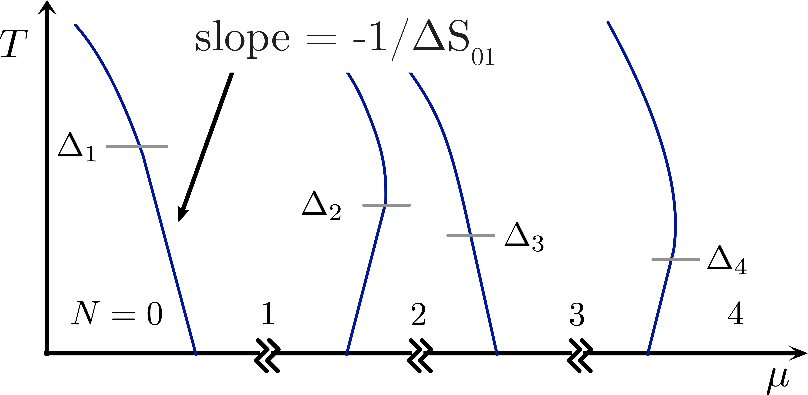

Direct Entropy Measurement in a Mesoscopic Quantum System

Nikolaus Hartman ,
Christian Olsen, Silvia Folk, Mohammad Samani,
Saeed Fallahi, Geoffrey C. Gardner,
Michael Manfra ,
and Joshua Folk
APS March Meeting
statistics of particles identified through thermodynamic measurements
Electrons and quasiparticles with strong interactions and non-trivial topology often have statistical properties that distinguish them from fermonic and bosonic particles.
A few proposed entropy measurements:
-
Majorana bound states in semiconductor-superconductor systems.
- identify non-Abelian Majorana mode by non-integer values of $e^{S/k_B}$
- S. Smirnov, Physical Review B 92, 1 (2015).
A few proposed entropy measurements:
-
Non-trivial entanglement structure in 2-channel Kondo model.
- 2CK state has $S = \frac{1}{2} k_B \ln{2}$ different from both 1CK ($S = 0$) and unscreened spin-1/2 ($S = k_B \ln{2}$)
- B. Alkurtass et al., Physical Review B 93, 1 (2016).
A few proposed entropy measurements:
-
Moore-Read quasiparticles in $\nu = 5/2$ FQH state.
- Discontinuity in $S$ across $\nu=5/2$
- N. R. Cooper and A. Stern, Physical Review Letters 102, 176807 (2009).
What is difficult here
Entropy measurements are common in bulk and single crystal samples (mm scale) through heat capacity or magnetization measurements
Mesoscopic system heat capacity and magnetic moments too small -- even in 2DEG Hall devices
... Closer look at $\nu=5/2$ proposals for solution
Cooper and Stern, PRL 102, 2009

$\left(\frac{\partial \mu}{\partial T}\right)_{p,n} = -\left(\frac{\partial s}{\partial n}\right)_{p,T}$
We know how to control and measure $\delta \mu$ and $\delta T$!
Samani, PhD Thesis (Folk lab), 2017

- Measure $\delta \mu$ using an SET capacitively-coupled to the 2DEG while oscillating $\delta T$ through Joule heater
Negative result: No evidence of quasiparticle entropy in $\nu = 5/2$ state.
Ben-Shach et al., PRL 110, 2013
- Charging spectrum of single particle addition energies, $\mu_N$, in localized state
- Coulomb blockade peak positions move with $T$ depending on $\Delta S$
$\left(\frac{\partial \mu}{\partial T}\right)_{p,N} = -\left(\frac{\partial S}{\partial N}\right)_{p,T} \Rightarrow \delta \mu_N = -(\Delta S_{N-1 \rightarrow N}) \delta T$
entropy of localized spins in a few-electron quantum dot

experimental signature

$\delta \mu_N = -(\Delta S_{N-1 \rightarrow N}) \delta T$
Looking for oscillations in $\mu_N$ with $\delta T$ relative to $E_F$
Charge Sensor Response
At $V_{mid}$:
$P(N-1) = P(N)$ or $\Gamma_{in} = \Gamma_{out}$
Two things happen when $T$ changes:
- Transition width broadens:
- $V_{mid}$ shifts if $\Delta S_{N-1 \rightarrow N} \neq 0$

$G_{sens}(V_p,T) \propto \tanh\left(\frac{\alpha (V_p - V_{mid}(T))}{2 k_B T}\right)$
Seeing Entropy Qualitatively in $\delta G_{sens}$


Quantitative Measurement
Oscillate $\delta T$ with AC current through QPC heater +
measure $\delta G_{sens}$ with lock-in amplifier

$\delta G_{sens}(V_p, T) \propto -\delta T \left[ \frac{\alpha(V_p - V_{mid}(T))}{2 k_B T} - \frac{1}{2}\color{#13DAEC}{\frac{\Delta S}{k_B}} \right] \cosh^{-2}\left(\frac{\alpha(V_p - V_{mid}(T))}{2 k_B T}\right)$
Quantitative Measurement

Best fit: $\frac{\Delta S_{01}}{k_B} = 0.71 = (1.02 \pm 0.03) \ln{2}$
Boltzmann entropy: $S_1 = k_B \ln{d_1}$,
where $d_1=2$ is the degeneracy of the 1-electron state
single particle entropy!
why this worked
- $\delta T$ oscillating fast enough to overcome $1/f$-noise
- Ability to measure charge transition w/o disturbing system
- Thermally broadened charge transition
- $k_B \delta T$ smaller than ground and excited state splitting
Not required
- The exact value of $\delta T$
- Knowing the plunger gate lever arm
$\Delta S$ independent of $\delta T$

determining $\alpha$ and $\delta T$


Is the measured parameter really entropy ?
Find out by tuning the spin degeneracy
with in-plane magnetic field.
spin-0 to spin-1/2 transitions with in-plane field


spin-0 to spin-1/2 transitions with in-plane field

$S = k_B \sum_{-,+} p_{i}(B_\parallel, T) \ln{ p_{i}(B_\parallel,T) }$
with $p_{\pm}(B_\parallel, T) = (1+ e^{\mp \frac{g\mu_B B_{\parallel}}{k_B T}})^{-1}$
bias spectroscopy of 0$\rightarrow$1 transition
changing the ground state

$S = k_B \sum_{-,+,\mathcal{S},\mathcal{T_+}} p_{i}(B_\parallel, T) \ln{ p_{i}(B_\parallel,T) }$
with $p_{\mathcal{S}/\mathcal{T_+}}(B_\parallel, T) = (1+ e^{\mp \frac{g\mu_B B_\parallel - \Delta_{ST}}{k_B T}})^{-1}$
bias spectroscopy of 1$\rightarrow$2 transition
Conclusions:
- Developed a thermodynamic measurement applicable to many mesoscopic systems
- Measured entropy of a few-electron system to 5% accuracy
- Confirmed results by investigating magnetic field behavior
Obvious extensions of this work are to localized states with non-trivial statistics. Contact us with thoughts/suggestions.